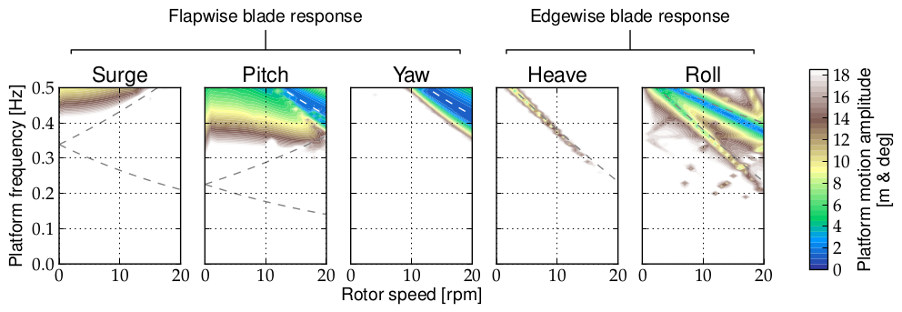
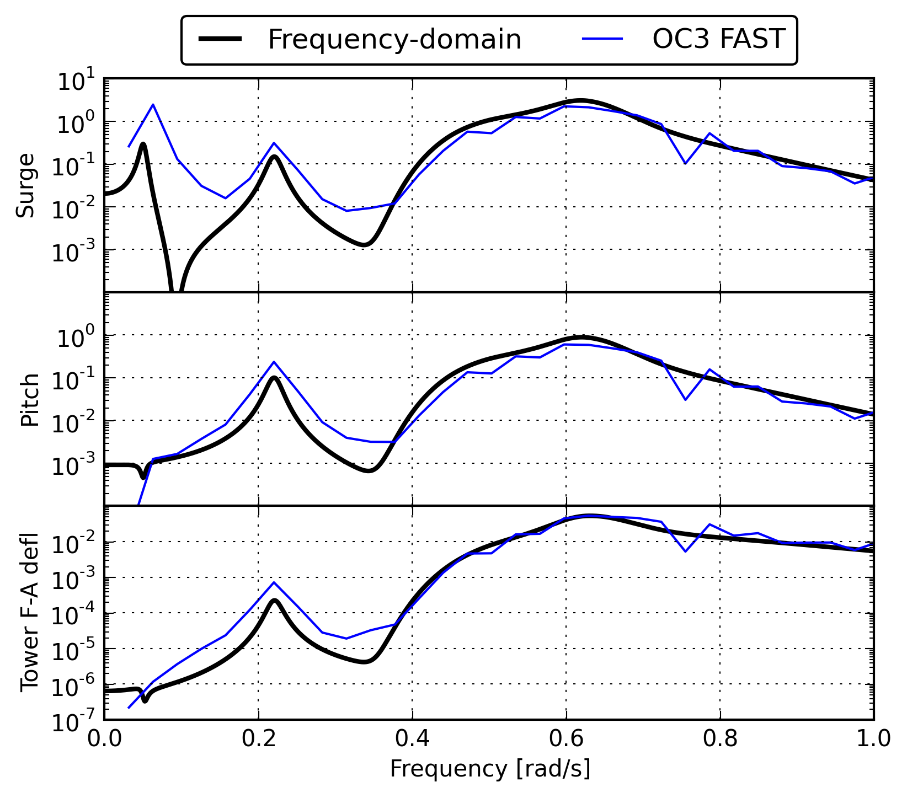
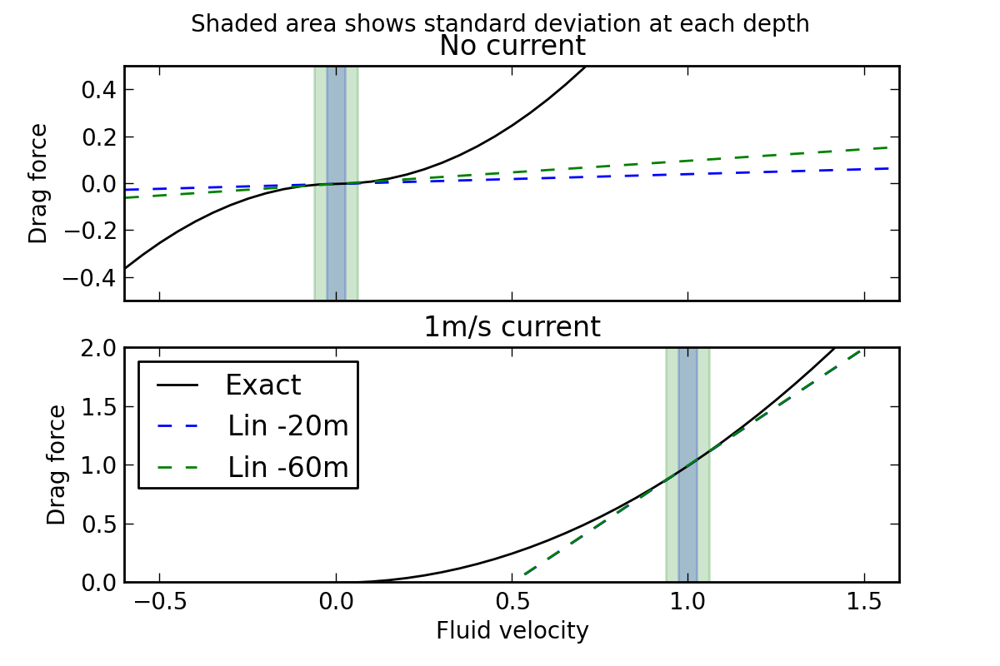
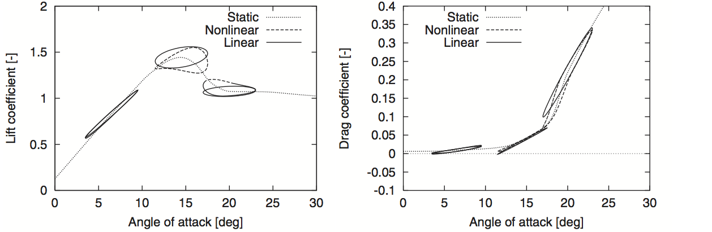

Richard Lupton
Prof. Robin Langley
Department of Engineering
University of Cambridge
Cambridge, UK
EAWE PhD Seminar
Visby, Sweden
19 September 2013
e.g. reduced-order non-linear models
6-dof rigid models
e.g. Wayman et al (2006), Tracy (2007), Matha (2009)...
600kW stall-regulated — out of date?
Frequency domain analysis requires a linearised model.
But wind turbines are not linear...
When is the linearised model
sufficiently accurate?
Can't directly linearise due to periodic steady state.
$$ q_i = a_0 + a_1 \sin{\Omega t} + b_1 \cos{\Omega t} $$
Multi-Blade Coordinate (MBC) / Coleman transform removes periodicy if isotropic and ≥ 3 blades
\begin{multline} \ddot{\alpha} + \biggl[ \underbrace{\vphantom{\Biggr|} \omega_f^2}_{\substack{\mbox{flap} \\ \mbox{stiffness}}} + \underbrace{\vphantom{\Biggr|} \Omega^2}_{\substack{\mbox{centrifugal} \\ \mbox{stiffness (rotor)}}} \\ + \underbrace{\vphantom{\Biggr|} \dot{\phi}^2 \left(\lambda h\cos \theta + \frac{1}{2} \cos 2\theta - \frac{1}{2} \right)}_{\substack{\mbox{centrifugal stiffness} \\ \mbox{(platform rotation)}}} - \underbrace{\vphantom{\Biggr|} \lambda g \cos \theta}_{\substack{\mbox{gravity}\\ \mbox{stiffness}}} \biggr] \alpha \\ = \underbrace{\vphantom{\Biggr|} \lambda g\phi}_{\substack{\mbox{out-of-plane}\\ \mbox{gravity load}}} + \underbrace{\vphantom{\Biggr|} 2\dot{\phi}\Omega \sin \theta}_{\substack{\mbox{Coriolis}\\ \mbox{force}}} - \underbrace{\vphantom{\Biggr|} \ddot{\phi}\left(\lambda h+\cos \theta \right)}_{\substack{\mbox{platform acceleration}\\ \mbox{force}}} \end{multline}
$$ \mbox{“non-linearity”} = \frac{ \sigma_x(A) / A }{ \sigma_x(A_0) / A_0 } - 1 $$
Under reasonable conditions ($\omega < 0.2 \mbox{ Hz}$, $\Omega < 20 \mbox{ rpm}$),
the response is linear
Linear diffraction model:
\begin{align} \left[ -\omega^2 \left(\boldsymbol{A}(\omega) + \boldsymbol{M} \right) + i \omega \left(\boldsymbol{B}(\omega) + \boldsymbol{B^{\mathrm{m}}} \right) + \left(\boldsymbol{C} + \boldsymbol{C^{\mathrm{m}}} \right) \right] \boldsymbol{\xi}(\omega) \\ = \eta \boldsymbol{X}(\omega)\label{eq:1} \end{align}
Spectrum of response:
$$ S_{\xi\xi}(\omega) = \left| H(\omega) \right|^2 \;\; \left| X(\omega) \right|^2 \;\; S_{\eta\eta}(\omega) $$
From this can calculate response statistics, extreme values, estimate fatigue
Non-linear interactions cause mean, sum & difference frequencies
This doesn't seem to be as important for wind turbines as bigger floating platforms
Example spectra (OC3 case 4.2):
e.g. viscous drag: $ F = \frac{1}{2} \rho C_d A u_{\mathrm{rel}} \left| u_{\mathrm{rel}} \right| $ 

Hansen, MH. Aeroelastic stability analysis of wind turbines using an eigenvalue approach. Wind Energy 7(2), 2004.